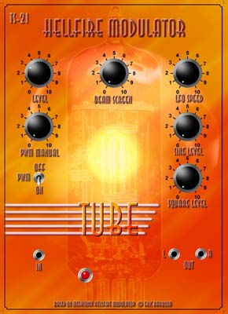

|
 This is another of Eric Barbour's tube designs. It is essentially a custom built TS-21 Hellfire Modulator. These are available pre-built, in a 2U rack-mounting cabinet from Metasonix. Fairly obviously, this one has had one of my panel designs inflicted on it. It could be considered as two effects in one, a pulse width modulator and a beam modulator. It is possible to get a wide variety of effects from this, from simple tremelo, to fairly serious wave mangling. The PWM section can be used to get some pretty aggressive sounds, which can then be modified further by the beam modulator (wave folding, tremelo etc). A rather versatile module. An article and circuit diagram for a beam modulator similar to the one in this module is presented here. If you want the whole deal, you'll have to buy the TS-21.
Here's one for all the people who keep asking if my modules "really look like that". From the photo, it should be obvious that they do.
Article, art & design copyright 2001 by Ken Stone
|